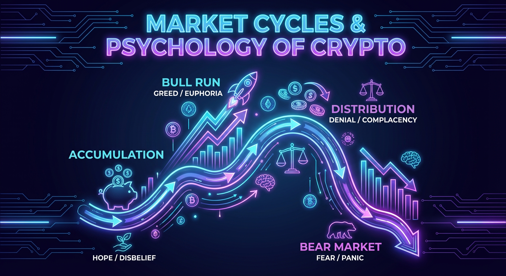

Οι αγορές κινούνται σε κύκλους. Το ίδιο και τα συναισθήματα των επενδυτών — από αισιοδοξία μέχρι πανικό.

Ένας κύκλος αγοράς είναι το μοτίβο που επαναλαμβάνεται: άνοδος, ευφορία, πτώση, απόγνωση, ανάκαμψη.
Κάθε κύκλος περνά από τέσσερις φάσεις:
Η τιμή είναι χαμηλά, οι smart money αγοράζουν σιγά-σιγά.
Η τιμή ανεβαίνει, αρχίζει ο FOMO, νέοι επενδυτές μπαίνουν.
Η τιμή κοντά στο top, οι έμπειροι πουλάνε στους νέους αγοραστές.
Η τιμή πέφτει, ο πανικός κυριαρχεί, πολλοί πουλάνε στο χαμηλό.
Το δύσκολο: όλοι νομίζουν ότι ξέρουν σε ποια φάση είμαστε — αλλά συνήθως το καταλαβαίνουν αφού έχει ήδη αλλάξει.
Τα πιο κοινά ψυχολογικά λάθη:
FOMO: Αγοράζεις αργά, κοντά στο top.
FUD: Πουλάς στον πανικό, συχνά στο χαμηλό.
Overconfidence: Μετά από κέρδη ρισκάρεις πολύ.
Loss aversion: Κρατάς losers γιατί δεν θες να αποδεχτείς την ήττα.
Anchoring: Κολλάς σε μια τιμή και χάνεις αντικειμενικότητα.
Herd mentality: Ακολουθείς Twitter αντί για ανάλυση.
Top signals: τα πάντα στα νέα, leverage στα ύψη. Bottom signals: απόλυτη σιωπή, volume εξαιρετικά χαμηλό.
DCA και προκαθορισμένα exit targets αφαιρούν το συναίσθημα από τις αποφάσεις σου.
Tip: Φτιάξε exit plan στο bull market — αποφάσισε πού θα πουλήσεις πριν φτάσεις εκεί.
2017–2018: Ευφορία → crash 84%.
2020–2021: DCA στο bear → x10.
2022: FTX collapse, 80%+ πτώση altcoins.
2023–2024: Αθόρυβη ανάκαμψη — οι περισσότεροι εκτός.
Ο κύκλος δεν αλλάζει — αλλάζει η αντίδρασή σου σε αυτόν. Μάθε να τον αναγνωρίζεις, κράτα πειθαρχία και αφαίρεσε το συναίσθημα από τις αποφάσεις σου.